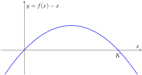
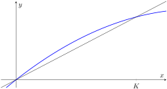

Section2.6Graphical Analysis of Projection Functions
A projection function establishes a relationship between consecutive values in a sequence. For a population, the projection function allows us to predict the population after one cycle given the size of the population at the current time. In this section, we will learn how to interpret information using the graph of the projection function.
Subsection2.6.1Visualizing Potential for Growth
In calculus, we learn that a function \(f(x)\) is increasing on intervals for which \(f'(x) \gt 0\) and decreasing on intervals for which \(f'(x) \lt 0\text{.}\) This is because the derivative \(f'(x)\) of a function \(f(x)\) measures the rate of change for the function \(f(x)\text{.}\) Sequences can be analyzed in a similar way, by looking at whether increments in the sequence are positive or negative.
The increment for a sequence \(x = (x_n)_{n=0}^{\infty}\) is the difference between consecutive terms, defined by the backward difference
For populations, the increment corresponds to the sum of births and net migration minus the deaths.
When a population model is defined by a projection function \(x_{n+1} = f(x_n)\text{,}\) then the increment depends on the value of the function \(f\text{,}\)
Consequently, we can identify when the population will grow or decline based on the value of \(f(x)-x\text{.}\) When \(f(x) \gt x\text{,}\) the sequence increases. When \(f(x) \lt x\text{,}\) the sequence decreases.
Consider a model for population growth where the per capita net growth rate is a decreasing linear function of the population size, \(r(P) = r_0 - a P\text{.}\) The projection function for this model is given by
\begin{equation*}
f(x) = x + (r_0 - ax) x = x + r_0 x - ax^2\text{.}
\end{equation*}
The fixed points for this are \(x=0\) and \(x=\frac{r_0}{a}\text{.}\) The second fixed point is often denoted by \(K=\frac{r_0}{a}\text{,}\) and the per capita growth can then written in the equivalent form \(r(P) = r_0(1-\frac{P}{K})\text{.}\) This results in a modified representation of the projection function,
\begin{equation*}
f(x) = x + r_0 x (1-\frac{x}{K})\text{.}
\end{equation*}
This model is called the discrete logistic model for population growth. We consider only the case when \(r_0 \gt 0\) so that \(K \gt 0\text{.}\)
There are two graphical perspectives to consider the increments. One method is to graph \(y = f(x) - x\text{,}\) looking at the relation between the increment and the current population. Such a graph is illustrated below. When looking at the value of the increment of a sequence with respect to the current sequence value, the roots where \(f(x)-x = 0\) are the fixed points. The graph is a concave down parabola with intercepts at \(x=0\) and \(x=K\text{,}\) which are the two fixed points for this sequence. In addition, the sign of the increments (above vs below the axis) tells us whether the sequence will increase or decrease for the next value. In this example, we see that \(f(x)-x\) is positive for \(x\) in the interval \((0,K)\) and negative in the intervals \((-\infty,0)\) and \((K,\infty)\text{.}\) Based on these signs, we see the population will increase whenever \(0 \lt P_n \lt K\) and will decrease whenever \(P_n \gt K\text{.}\) In the context of population growth, the negative interval of \(x\)-values has no physical interpretation. In other contexts where negative values could have physical meaning, seeing \(f(x)-x\) being negative for \(x \lt 0\) implies a sequence would decrease for values in that interval.

Figure2.6.1.
The equilibrium value \(K\) is called the carrying capacity, representing the population that the environment can sustain. When the population is below carrying capacity, the environment can sustain growth in the population. However, when the population is above the carrying capacity, the environment puts so much pressure on the population that the next cycle results in a smaller population.
The second graphical visualization is to consider a graph that shows both \(y=f(x)\) and \(y=x\text{.}\) Whenever \(f(x) \gt x\text{,}\) the projected value \(f(x)\) is predicted to be above the current value \(x\text{.}\) Conversely, whenever \(f(x) \lt x\text{,}\) the projected value \(f(x)\) is predicted to be below the current value \(x\text{.}\) The size of the increment is the vertical gap between the two graphs. A fixed point corresponds to where the graphs intersect, \(f(x)=x\text{.}\) This second visualization is also used to create cobweb diagrams that allow us to visualize the entire progression of the sequence, and not just whether it will increase or decrease in the immediate next step.

Figure2.6.2.
Subsection2.6.2Cobweb Diagrams
A cobweb diagram illustrates the dynamics of a sequence through its projection function by drawing a sequence of vertical and horizontal lines that represent the projection process. A cobweb diagram always begins with a graph showing both the projection function \(y=f(x)\) and the line of exact replacement \(y=x\text{.}\) Recall that a projection function takes a sequence value as input (\(x\)-value) and the output (\(y\)-value) gives the next value in the sequence. The steps in generating a cobweb diagram are explained below.
Initial Value
On the \(x\)-axis, identify the location of the initial value \(x_0\) and start on the line \(y=x\text{.}\) Your current point will be \((x_0,x_0)\text{.}\)
Project Next Value
Draw a vertical line between your current point and the projection graph \(y=f(x)\text{.}\) The \(y\)-value of the new point will be the next sequence value.
Update Current Value
Draw a horizontal line between your last point and the line \(y=x\text{.}\) The new \(x\)-value now corresponds to the next value of your sequence.
Repeat
Repeat the steps of projecting and updating. Vertical lines always end at the projection function; horizontal lines always end at \(y=x\text{.}\)
Example2.6.3.
Compare the cobweb diagrams for a discrete logistic population model with \(K=1\) (to represent 1 capacity unit, not 1 individual) and values \(r_0=0.75\) and \(r_0 = 1.5\) using initial values \(x_0=0.25\text{.}\) The projection function when \(r_0=0.75\) is given by \(f(x) = x + 0.75x(1-x)\text{.}\) When \(r_0=1.25\text{,}\) the projection function is \(f(x)=x + 1.5x(1-x)\text{.}\)
First, we consider the cobweb diagram for \(f(x) = x + 0.75x(1-x)\text{.}\) The figure below is interactive in that you can see the repetition in drawing the segments of the diagram. For this projection function and initial value, the sequence steadily increases toward the fixed point. We can see that the fixed point is stable.
Figure2.6.4.
Next we look at the cobweb diagram for \(f(x)=x + 1.5x(1-x)\text{.}\) In this example, the vertex of the parabola is to the left of the fixed point so that our sequence actually exceeds the carrying capacity and begins to oscillate above and below the equilibrium. However, it does still eventually converge to the fixed point.
Figure2.6.5.
Because we can, here is an interactive figure where you can choose the value of \(r_0\) (\(0 \lt r_0 \lt 3\)) and the initial value \(x_0\) and explore a variety of cobweb diagrams in a single figure. Notice in particular that when the value of \(r_0\) is larger, so that the peak of the parabola is higher, the dynamics become more complex.
Figure2.6.6.
The code below demonstrates how you can create the graph of a projection function and the line \(y=x\text{,}\) and then how to add a cobweb diagram corresponding to a particular value.
# Define the projection function
my_proj <- function(x, params) {
with(params,
{ # Expecting values for r0 and K
x_out <- x + r0*x*(1-x/K)
}
)
}
# Parameters for this example
my_params <- list(r0 = 0.75, K = 10)
# Initial value and number of steps
x0 <- 1
num_steps <- 10
# Window for the plot
x_min <- 0
x_max <- 15
# Generate the smooth functions
xvals <- seq(from = x_min, to = x_max, length.out = 100)
yvals <- my_proj(xvals, my_params)
library(ggplot2)
base_plot <- ggplot() +
geom_line(mapping = aes(x = xvals, y = yvals), color="blue", linewidth=1) +
geom_abline(intercept = 0, slope = 1) +
xlim(x_min, x_max) + ylim(x_min, x_max) +
labs(x = "x[n]", y = "x[n+1]")
# Generate the sequence used for the cobweb
x_seq <- double(num_steps + 1)
x_seq[1] <- x0
for (n in 1:num_steps) {
x_seq[n+1] <- my_proj(x_seq[n], my_params)
}
# Create a sequence of points.
cobweb_x <- double(2*num_steps + 1)
cobweb_y <- double(2*num_steps + 1)
# First point at (x0, 0)
cobweb_x[1] <- x0
cobweb_y[1] <- 0
# For each step, add two points
for (n in 1:num_steps) {
# Move vertically to projection function
cobweb_x[2*n] <- x_seq[n]
cobweb_y[2*n] <- x_seq[n+1]
# Move horizontally
cobweb_x[2*n+1] <- x_seq[n+1]
cobweb_y[2*n+1] <- x_seq[n+1]
}
# Draw the cobweb on top of the base plot
cobweb_plot <- base_plot +
geom_path(mapping = aes(x = cobweb_x, y = cobweb_y),
color="orange", linewidth=1)
cobweb_plot
Listing2.6.7.
Subsection2.6.3Cobwebs and Stability
We conclude the section by combining the concepts of cobweb diagrams and stability. Recall that our criteria for local stability depended on the slope of the tangent line at the fixed point. Suppose that \(x^*\) is a fixed point so that \(f(x^*)=x^*\text{.}\) A cobweb diagram of the linear approximation around the fixed point behaves in one of the following four ways.
If \(f'(x^*) \gt 1\text{,}\) then the cobweb diagram moves away from the fixed point like a staircase and the fixed point is unstable.
If \(0 \lt f'(x^*) \lt 1\text{,}\) then the cobweb diagram moves toward the fixed point and the fixed point is stable.
If \(-1 \lt f'(x^*) \lt 0\text{,}\) then the cobweb diagram spirals inward toward the fixed point and the fixed point is stable.
If \(f'(x^*) \lt -1\text{,}\) then the cobweb diagram spirals outward away from the fixed point and the fixed point is stable.
More complicated dynamics can occur further away from the fixed point. But at least near the fixed point, the linear approximation gives a good description of what is happening, at least when \(|f'(x^*)| \ne 1\text{.}\)
A dynamic cobweb diagram of a linear projection function \(f(x)=1+a(x-1)\) where you can choose the slope \(a\) at the fixed point \(x^*=1\) is illustrated below. Can you relate this behavior to what you observed in the discrete logistic model earlier?